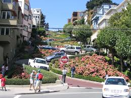

The Most Livable Neighborhoods in New York

Where is the best place to live in New York City? That all depends on who you ask. There are so many great New York neighborhoods from which to choose, each with its own defining character, its own rhythm, its own strengths and weaknesses, that there are almost as many different types of communities here as there are different types of New Yorkers. And that, needless to say, is a lot.
10 Great Neighborhoods in the San Francisco Bay Area
In the San Francisco Bay Area, home sweet home can range from an urban loft to a refuge in the hills. Discover 10 diverse Bay Area neighborhoods to find the one that's best for you.
Let us help you
25 Things I wish I knew before moving to San Francisco

I moved to San Francisco 9 months ago from the East Coast bastion of Boston. Despite having experience living in a major US city, I found quite a few surprises coming here. Some have been great, while others not so much.
If you’re planning the move here, I hope this will help you know better what to expect. And if you already live in SF, this should give you a laugh or two and hopefully inspire you to leave a comment with anything I missed. Consider this the guide I wish someone had given me when I moved here.